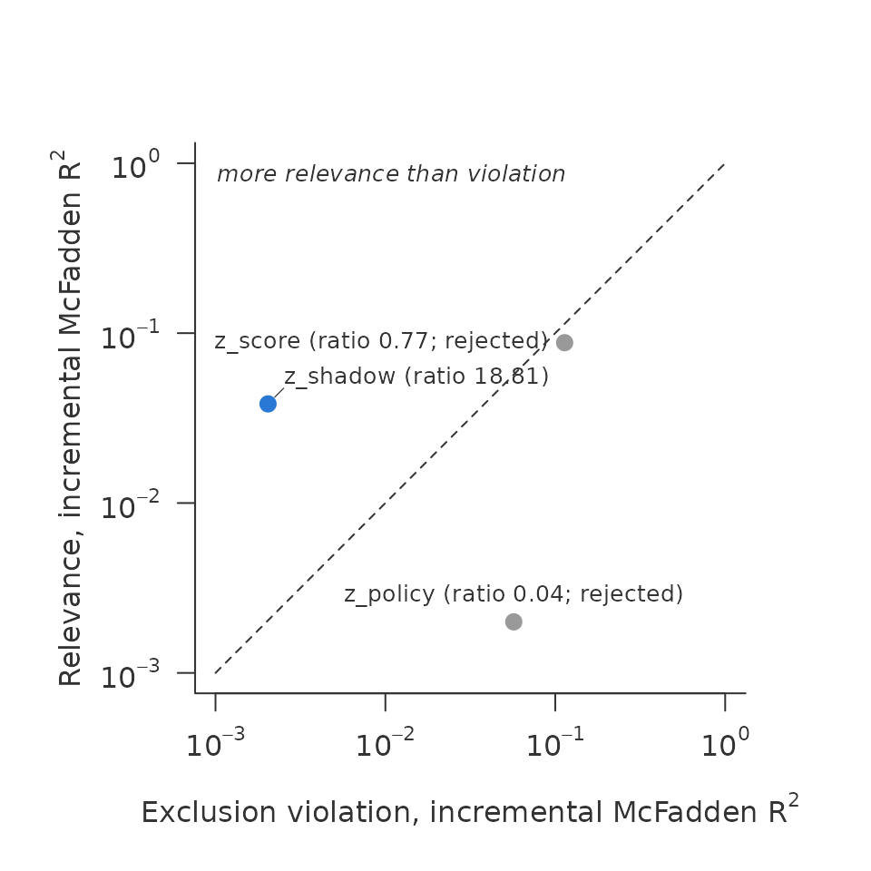
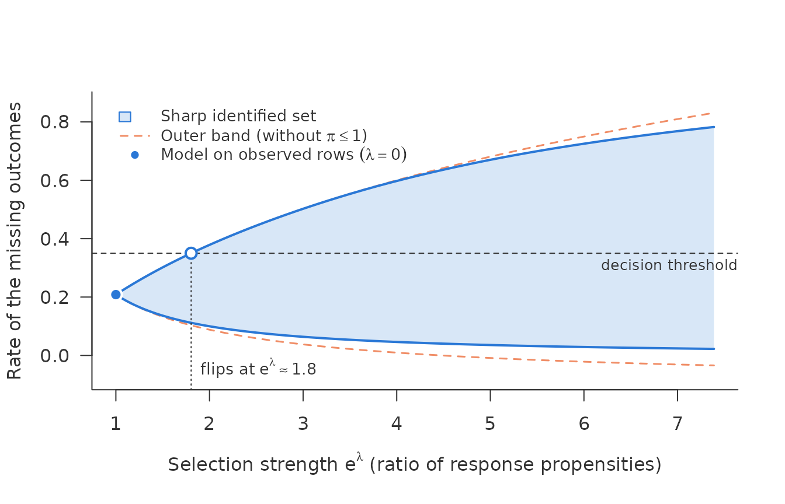
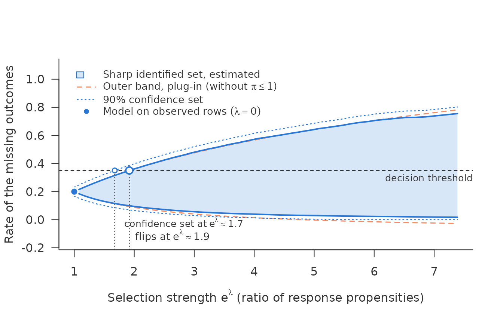
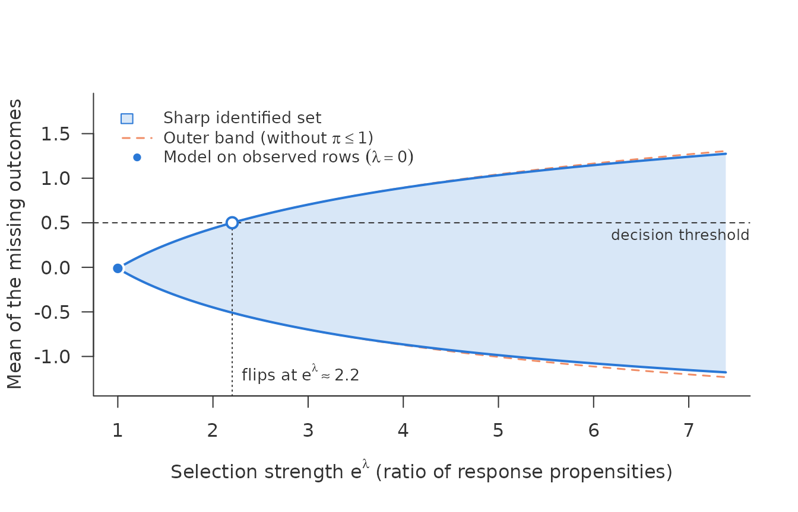
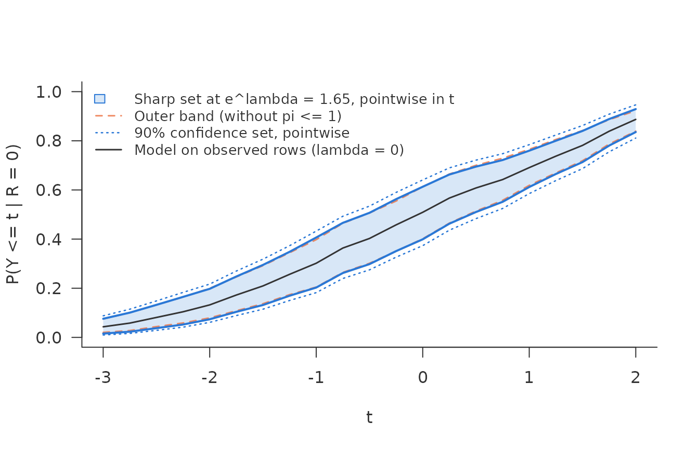

The problem
An outcome \(Y\) is observed for some rows and missing for others. Whether a row is observed may depend on \(Y\) itself. Applications that look risky are declined, so their default is never seen. Patients who do badly leave a trial, so their final measurement is never taken. A model fitted to the observed rows then answers a question about the observed rows. Carrying its answer over to the missing rows assumes the data are missing at random (MAR).
The package asks two separate questions about such data.
Is there a shadow variable? A shadow variable predicts \(Y\) but has no effect of its own on whether \(Y\) is observed. With one, the missing-data mechanism can be identified.
shadow_screen()reports, for each candidate, how strongly it predicts the outcome and how strongly it violates that exclusion restriction, on a common scale.-
How far can the answer move?
sharp_scan()drops identification and asks how much the conclusion can change if selection on \(Y\) has a given strength. That strength is a bound \(e^\lambda\) on the ratio of the response propensities of two rows with the same \(X\) and different \(Y\):\[\frac{P(R = 1 \mid X = x, Y = y)}{P(R = 1 \mid X = x, Y = y')} \le e^\lambda .\]
At \(\lambda = 0\) this is MAR. At \(e^\lambda = 2\), an applicant who would repay may be up to twice as likely to be accepted as an otherwise identical applicant who would default, or the other way round.
The two tools rest on different assumptions and do not form one procedure. The scan does not need a shadow variable, and passing the screen does not make the scan unnecessary.
Simulated data with a known truth
simulate_shadow() draws data in which the bad outcome
makes a row less likely to be observed. tilt = -1 means the
ratio of propensities is \(e^1\) in
every row. The data carry their own truth: eta_obs is \(P(Y = 1 \mid X, R = 1)\) and
obs_rate is \(P(R = 1 \mid
X)\).
d <- simulate_shadow(5000, tilt = -1, seed = 1)
mean(d$observed)
#> [1] 0.5322The candidates play known roles. z_shadow is a valid
shadow variable. z_policy acts only on selection.
z_score acts on both, like a credit bureau score that
predicts default and that the lender also uses to decide.
Question 1: the screen
Why a shadow variable
The observed rows alone cannot tell MAR from selection on \(Y\): every model fitted to them fits equally well whatever the missing outcomes are. Some assumption has to fill the gap. A shadow variable \(Z\) is one such assumption. It must do two things:
- relevance: \(Z\) predicts \(Y\) given \(X\);
- exclusion: \(Z\) has no effect of its own on whether \(Y\) is observed, once \(X\) and \(Y\) are known.
With such a \(Z\), how selection depends on \(Y\) can be estimated instead of assumed. In lending, a candidate is a characteristic that the lender recorded but did not use in the decision; in a trial, an earlier measurement of the outcome.
What the screen does
Exclusion cannot be checked directly. It conditions on \(Y\), and \(Y\) is missing in exactly the rows that matter. What the data can show is whether a candidate is relevant at all, and whether it predicts selection more strongly than it predicts the outcome. The second is the mark of a variable that the selection uses directly, such as a score the lender decides on. The screen measures both for every candidate, so that unfit candidates are discarded before a model is built on one.
For each candidate it fits four logistic models: the outcome on \(X\) and on \(X + Z\) among the observed rows, and the response indicator on \(X\) and on \(X + Z\) over all rows. Relevance is the gain in McFadden \(R^2\) from adding \(Z\) to the outcome model. Exclusion violation is the same gain in the response model. Both are on one scale, so their ratio says how much better \(Z\) predicts the outcome than it predicts selection.
sc <- shadow_screen(d, outcome = "y", response = "observed",
covariates = c("x1", "x2"),
candidates = c("z_shadow", "z_policy", "z_score"))
sc
#> <shadow_screen> relevance vs exclusion violation, incremental McFadden R^2
#> pass: relevance chi2/df >= 10 and ratio > 1
#> numeric as linear terms: x1, x2, z_shadow, z_policy, z_score
#> candidate relevance exclusion ratio chi2/df verdict
#> z_shadow 0.0383 0.00204 18.8 55 pass
#> z_policy 0.002 0.057 0.0351 2.87 reject: weak, exclusion
#> z_score 0.0879 0.114 0.774 126 reject: exclusionReading the result
A candidate passes when its relevance is clear, a likelihood-ratio \(\chi^2\) per degree of freedom of at least 10, and its ratio is above 1. The plot shows each candidate with violation across and relevance up. A shadow variable sits above the equality line, with more relevance than violation. How far above is no test: the stronger the selection on the outcome, the more a valid shadow variable predicts selection too, through the outcome, and the closer it moves to the line. A candidate well below the line is the warning sign.
plot(sc)
z_shadow passes with a ratio of 18.81.
z_score is the most relevant candidate but fails, with a
ratio of 0.77. It predicts selection even better than it predicts the
outcome. That is the typical fate of a bureau score in reject
inference.
Numeric characteristics enter linearly by default. When selection
cuts hard at a threshold, as a lender declining every score below a
cut-off, use numeric = "classes". The applications vignette
shows why this matters.
Question 2: the scan
The scan bounds a rate over a portfolio of rows: here the unobserved
ones, and the rate of their own missing outcomes, \(E(Y \mid R = 0)\). In reject inference that
is the default rate the rejected applicants would show if they were
granted. It is not the average of \(\eta(x) =
P(Y = 1 \mid X = x)\) at their characteristics: under selection
on the outcome the rejected at a given \(x\) differ from all applicants at that
\(x\), and
unobserved = TRUE says so. The scan needs two vectors at
those rows: \(\hat\eta_{\mathrm{obs}}(x)\) and \(\hat r(x)\). Any learner can produce them.
Here we take the truth, to separate the logic of the scan from
estimation.
rej <- d[d$observed == 0, ]
s <- sharp_scan(rej$eta_obs, rej$obs_rate, threshold = 0.35, unobserved = TRUE)
s
#> <sharp_scan> sharp identified set for a rate under a propensity ratio <= exp(lambda)
#> rows: 2339 aggregation: union
#> set for: the rows' own missing outcomes, E(Y | R = 0)
#> lambda = 0 (model on observed rows): 0.208
#> lambda = 2 (propensity ratio 7.39): sharp [0.0225, 0.783], outer [-0.0341, 0.831]
#> threshold 0.35 reached by
#> sharp set: lambda = 0.59 (propensity ratio 1.8)
#> outer band: lambda = 0.59 (propensity ratio 1.8)
#> cap pi <= 1 at lambda = 2 binds in 73% of the rows entering the set
#> for the lower bound, 19% for the upper
plot(s)
How to read the plot:
- The point at \(e^\lambda = 1\) is what a model on the observed rows asserts under MAR: a rate of 0.208 for the unobserved rows.
- The filled band is the sharp identified set. Every rate inside it is consistent with the data and with selection up to that strength, and no rate outside it is.
- The dashed band is the outer band, which shifts every row’s log-odds by \(\pm\lambda\) and ignores the constraint that a response propensity is at most 1. For the unobserved rows that constraint says no more than that their own rate lies in \([0, 1]\), so the outer band can leave that range, as its lower end does here. The sharp set respects it. Where \(\hat r\) is small the two are close; where it is large, the sharp set is much narrower; the applications vignette shows such a case.
- The threshold is the rate at which the decision changes, here 0.35. The drop line marks the flip point, the smallest selection strength at which the other decision is no longer ruled out. Here it lies at \(e^\lambda \approx\) 1.80.
The flip point is the number to report: “the conclusion that the unobserved rows are better than 0.35 holds unless selection on the outcome makes the propensity ratio exceed 1.80.”
Because the data are simulated, we know the truth. The simulator
stores \(\eta(x)\) as eta,
\(\eta_{\mathrm{obs}}(x)\) as
eta_obs and \(r(x)\) as
obs_rate, so by Bayes’ rule the true rate of the unobserved
rows is
It lies in the set at \(e^\lambda = e^1\), the strength we simulated, and there on its upper edge. The simulator gives every row the same, extreme tilt, so the truth sits where the set ends:
b <- as.data.frame(s, lambda = 1)
c(lower = mean(b$lower), upper = mean(b$upper))
#> lower upper
#> 0.07122292 0.47069036Sampling error
sharp_scan() treats its inputs as known. With estimated
inputs, use sharp_scan_ci(). It needs inputs for all rows,
fitted out of fold, and the observed outcomes.
crossfit_inputs() produces them for any learner passed as a
function of a training frame and new rows.
f <- ~ x1 + x2 + z_shadow + z_policy + z_score
inp <- crossfit_inputs(d, "observed",
fit_eta = function(train, new) predict(glm(update(f, y ~ .), binomial, train),
new, type = "response"),
fit_r = function(train, new) predict(glm(update(f, observed ~ .), binomial, train),
new, type = "response"),
seed = 1)
ci <- sharp_scan_ci(inp$eta_obs, inp$r, d$observed, d$y, target = "unobserved",
threshold = 0.35)
ci
#> <sharp_scan_ci> sharp set for a rate, debiased, with 90% confidence set
#> rows: 5000 target: unobserved (2339 rows)
#> r-hat < 0.01: 3 target rows, 0 observed rows; smallest r-hat observed 0.043
#> lambda = 0: 0.199 [0.167, 0.231]
#> lambda = 2 (propensity ratio 7.39): set [0.017, 0.755], confidence set [0, 0.802]
#> threshold 0.35 reached by
#> estimated set: lambda = 0.651 (propensity ratio 1.92)
#> confidence set: lambda = 0.515 (propensity ratio 1.67)
#> outer band (plug-in): lambda = 0.657 (propensity ratio 1.93)
#> cap pi <= 1 at lambda = 2 binds in 86% of the rows entering the set
#> for the lower bound, 23% for the upper
plot(ci)
The estimate is debiased. The dotted lines are a 90% confidence set for the identified set, pointwise in \(\lambda\). A second drop line marks where the confidence set reaches the threshold, here at \(e^\lambda \approx\) 1.67. That is the flip point the data can vouch for.
Two lines of the output deserve attention.
- “r-hat < 0.01” counts rows with a very small estimated chance of being observed. Observed rows with small \(\hat r\) get weight \(1/\hat r\), so a few of them can carry much of the variance. The width of the confidence set should be read together with this count.
-
A warning about inverse weights means the estimate
left \([0, 1]\) by a wide margin,
typically because the response model separates some observed rows. Use a
smoother or penalised response model, or
trim.
Comparing two portfolios
sharp_scan_contrast() scans the difference of rates
between two portfolios chosen by \(X\),
such as two treatment arms or two regions. Each portfolio is a whole
segment of rows, observed and unobserved alike. Its threshold is 0, no
difference.
k <- sharp_scan_contrast(inp$eta_obs, inp$r, d$observed, d$y,
target_a = d$x1 > 0, target_b = d$x1 <= 0,
labels = c("x1 > 0", "x1 <= 0"))
k
#> <sharp_scan_contrast> difference of rates x1 > 0 - x1 <= 0, debiased, with 90% confidence set
#> rows: 5000 x1 > 0: 2461 rows x1 <= 0: 2539 rows
#> r-hat < 0.01: 3 target rows, 0 observed rows; smallest r-hat observed 0.043
#> lambda = 0: 0.145 [0.109, 0.181]
#> lambda = 2 (propensity ratio 7.39): set [-0.181, 0.514], confidence set [-0.222, 0.555]
#> difference 0 reached by
#> estimated set: lambda = 0.817 (propensity ratio 2.26)
#> confidence set: lambda = 0.604 (propensity ratio 1.83)
#> outer band (plug-in): lambda = 0.665 (propensity ratio 1.94)A mean instead of a rate
For an outcome that is not binary, sharp_scan_mean()
takes, per row, a grid of conditional quantiles of \(Y\) given \(R =
1\) and \(X\).
quantile_grid() builds it from a quantreg::rq
fit, from any function of the levels, or from draws.
dc <- simulate_shadow(3000, tilt = -1, outcome = "continuous", seed = 1)
obs <- dc[dc$observed == 1, ]
mis <- dc[dc$observed == 0, ]
m <- lm(y ~ x1 + x2 + z_shadow + z_policy + z_score, data = obs)
q <- quantile_grid(function(tau, newdata)
outer(predict(m, newdata), quantile(residuals(m), tau, names = FALSE), "+"),
mis, K = 100)
sm <- sharp_scan_mean(q, mis$obs_rate, threshold = 0.5, unobserved = TRUE)
plot(sm)
Like sharp_scan(), this treats its inputs as known. For
a debiased estimate with a confidence set, for the mean over all rows, a
segment chosen by \(X\), or the missing
outcomes (target = "unobserved"), use
sharp_scan_mean_ci() with inputs from
crossfit_quantiles(); the applications vignette shows it on
the CD4 counts of a clinical trial.
The distribution function and quantiles
A mean can hide where the distribution moves.
sharp_scan_cdf() scans \(P(Y \le
t)\) at each value of a grid, as the rate of the binary outcome
\(1(Y \le t)\), with the same
assumption and the same debiased estimate as
sharp_scan_ci(). crossfit_cdf() fits \(P(Y \le t \mid R = 1, X)\) as one
classification per \(t\), with the
column z holding \(1(Y \le
t)\).
tg <- seq(-3, 2, by = 0.25)
cf <- crossfit_cdf(dc, "observed", "y", tg,
fit_eta = function(train, new) predict(glm(update(f, z ~ .), binomial, train),
new, type = "response"),
fit_r = function(train, new) predict(glm(update(f, observed ~ .), binomial, train),
new, type = "response"),
seed = 1)
kc <- sharp_scan_cdf(cf$eta_t, cf$r, dc$observed, dc$y, t = tg, lambda = 0.5,
target = "unobserved")
plot(kc)
quantile(kc, c(0.25, 0.5, 0.75))
#> prob point lower upper
#> 1 0.25 -1.28519346 -1.75 -0.75
#> 2 0.50 -0.04444012 -0.75 0.50
#> 3 0.75 1.32165743 0.75 1.75The set and the confidence set hold for each \(t\) separately: no single law need reach the upper curve at every \(t\), and the confidence sets are not a band. The quantile bounds come from inverting the two curves; on the grid they are widened outwards, so a coarse grid makes them wider, never narrower.
Further reading
vignette("applications", package = "nonignorable")
applies the tools to two real cases side by side. On Lending Club 2014
the coding of the screen matters, and the main finding does not survive
MAR once sampling error is counted. In the ACTG 175 trial a comparison
of treatment arms survives moderate selection.